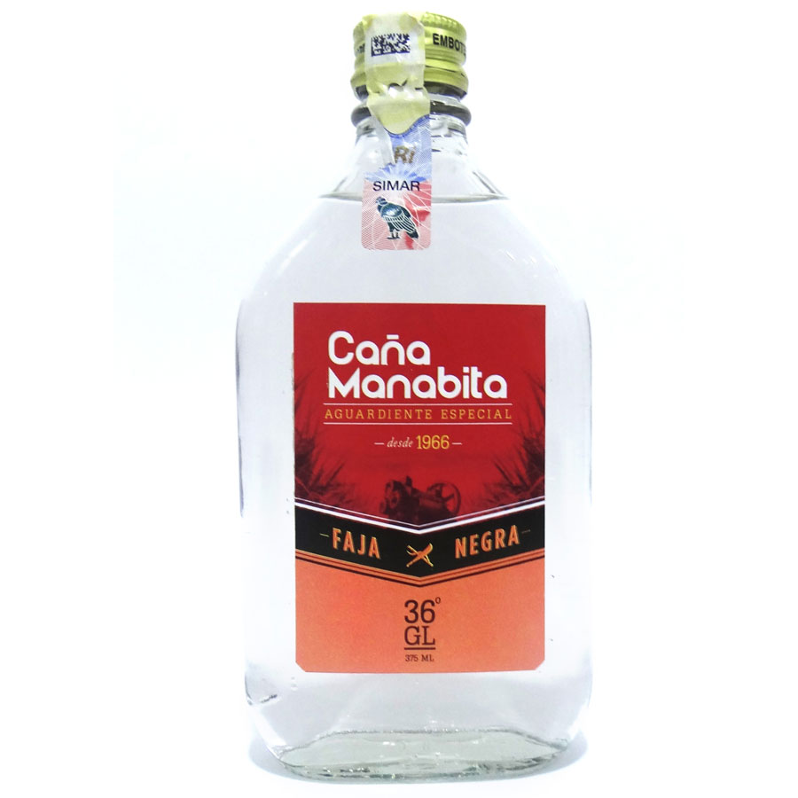
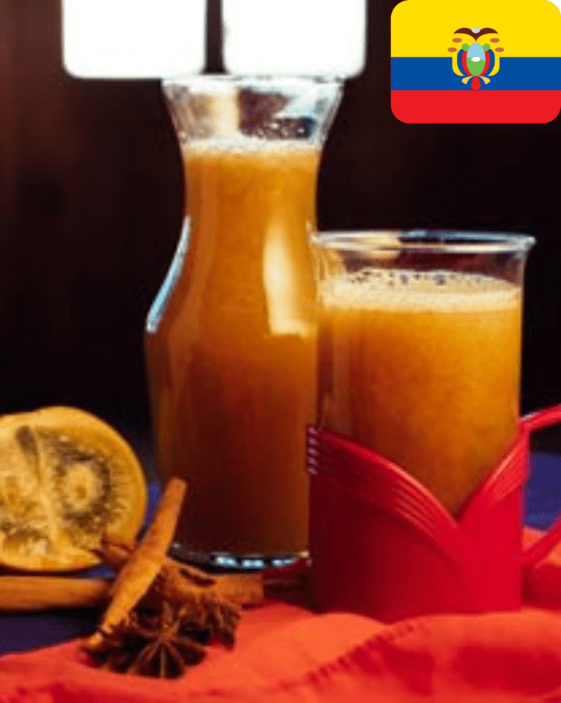
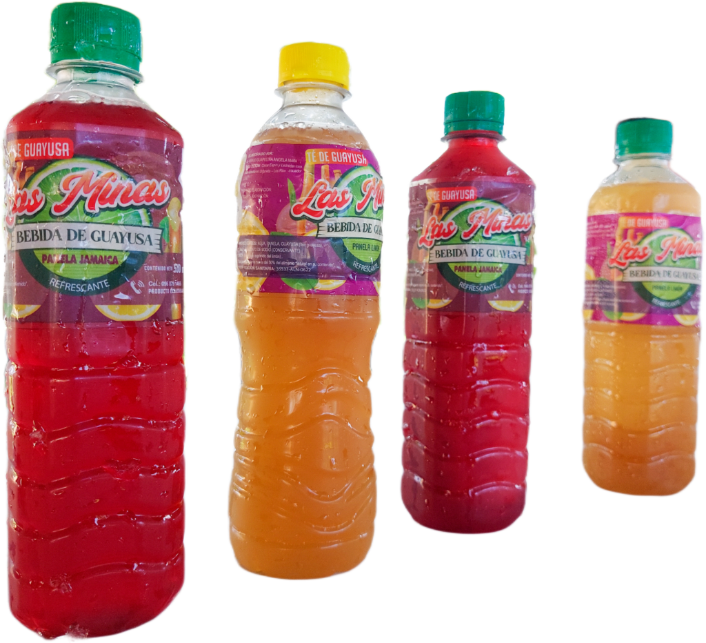

Bebidas típicas por regiones del país

En la Costa se consume aguardiente y caña manabita.

El canelazo es una bebida tradicional caliente hecha con aguardiente, canela y panela.

La Guayusha vevida hecha con hojas llamadas guayusha mas licor de caña.